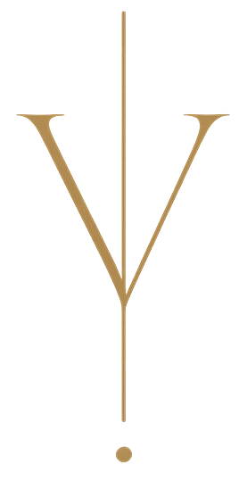

Sanktuarium św. Andrzeja Boboli·Warszawa
16 maja 2026·godz. 18:00
Cisza.
Głos.
Światło.
Silence·Voice·Light
Oprawa muzyczna
Uroczystej Mszy Świętej Odpustowej
ku czci św. Andrzeja Boboli, Patrona Polski

VoctEnsemble
pod kierownictwem Florenta de Bazelaire